Стас
Большие работы и реализм. В отзыве января 2026: «Делал две большие работы у мастера Стаса». Ещё Стас учит реализму.
- Тату по эскизууточнить
- Обучение реализмууточнить
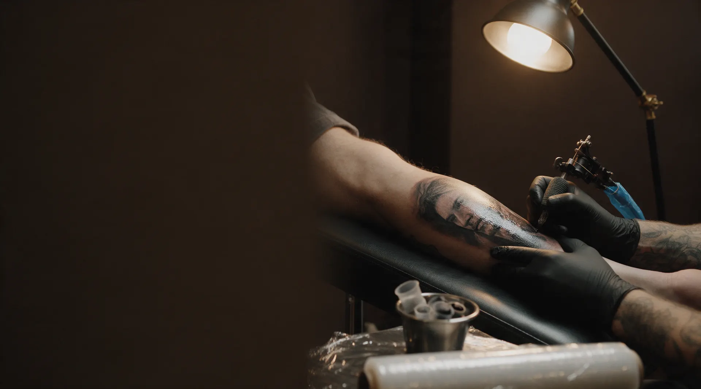
Реализм, цвет, графика и коррекция. Эскиз обсуждаем заранее, мастера подбираем под рисунок.
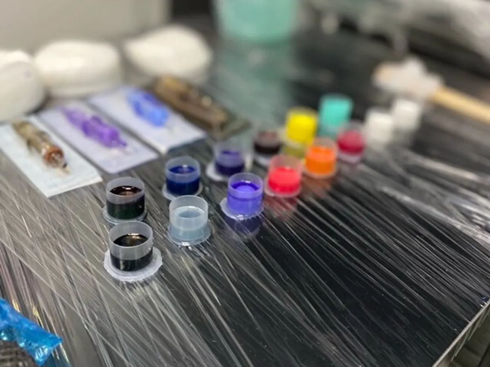
Работ в соцсетях много, а какой мастер делает нужный вам стиль и сколько это стоит – непонятно.
В отзывах хвалят разных мастеров, но кто из них ближе к вашему рисунку, по ленте не видно.
Первая татуировка, перекрытие или коррекция: сначала обсудить идею, а потом садиться в кресло.
В «Танкограде» мастера работают в разных стилях, и вы идёте к тому, кто ближе вашему рисунку. Гости пишут, что здесь находят мастера и по стилю, и по цене, и по душе.
Большие работы и реализм. В отзыве января 2026: «Делал две большие работы у мастера Стаса». Ещё Стас учит реализму.
Делает и татуировки, и пирсинг. В отзыве от 30 января 2026: «Настя замечательный мастер, делал у нее как татуировки, так и пирсинг».
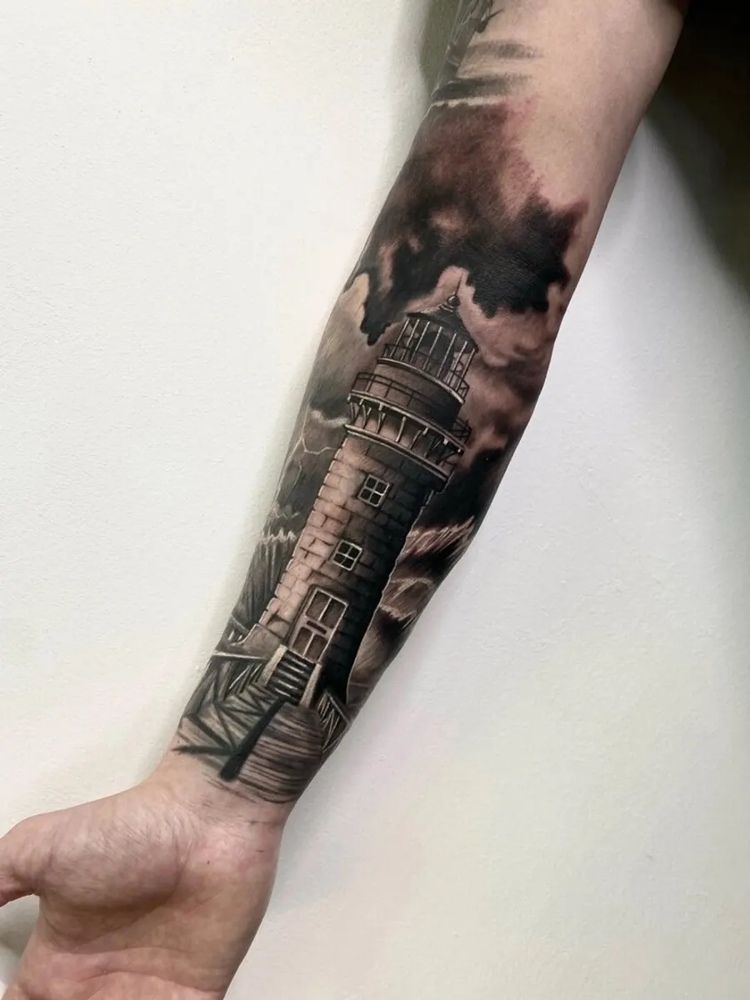
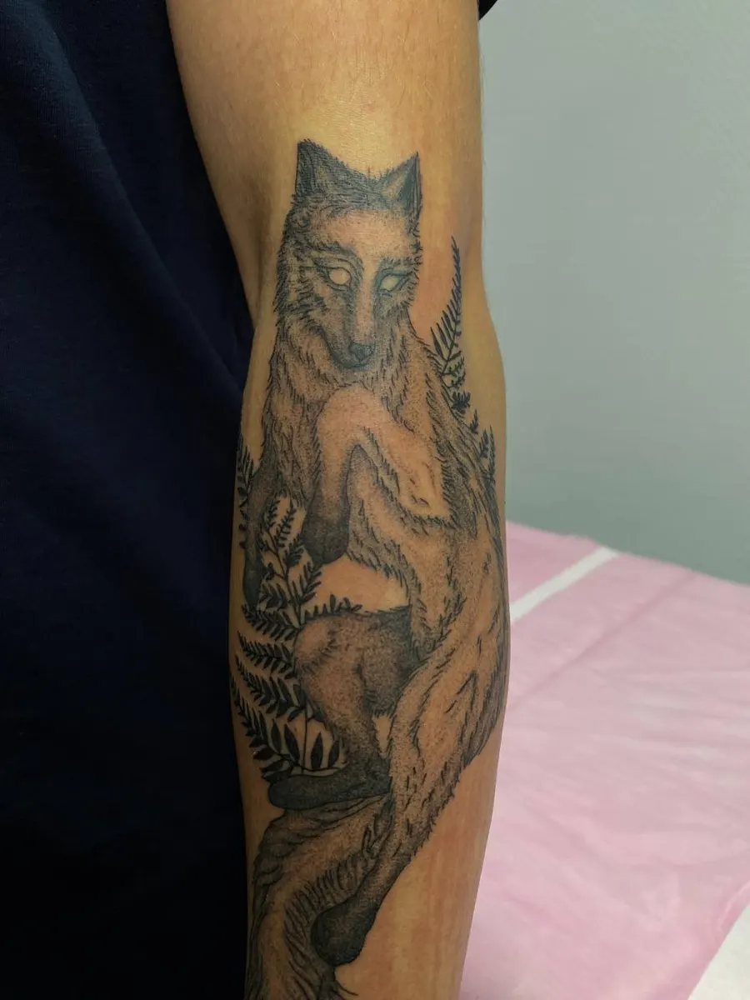
Фото с карточки студии на Яндекс.Картах.
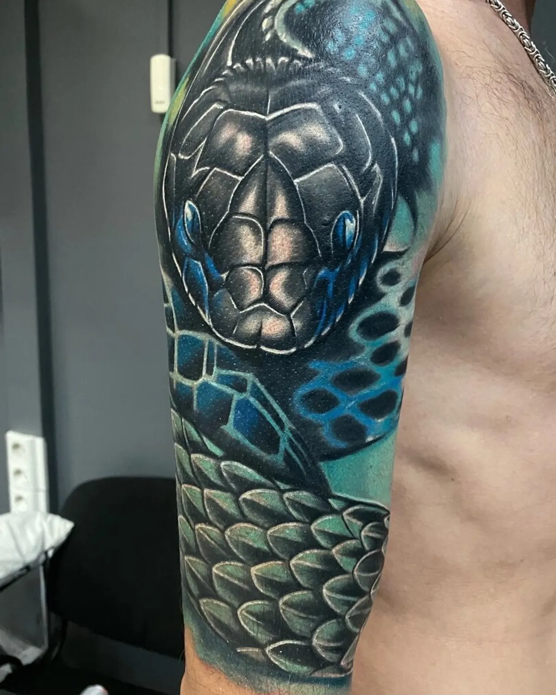
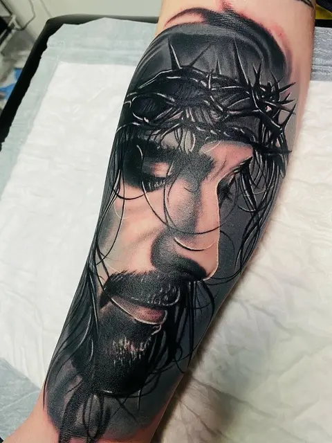
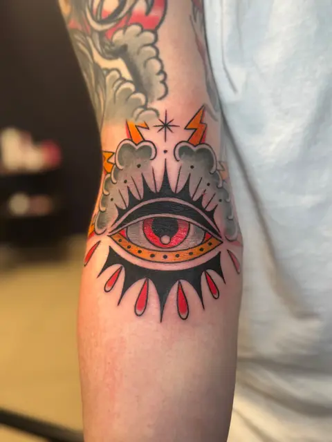
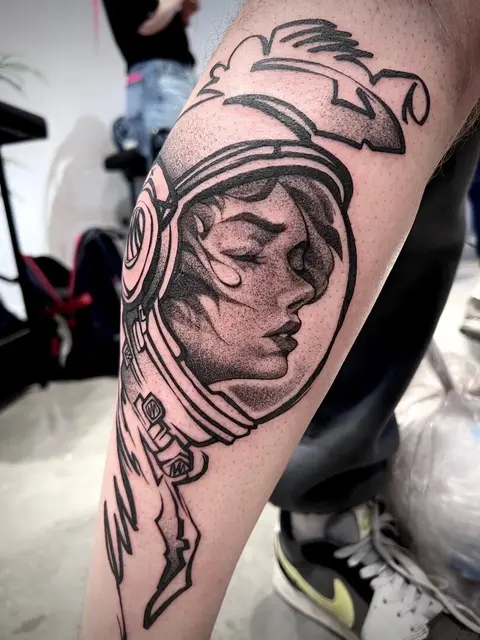
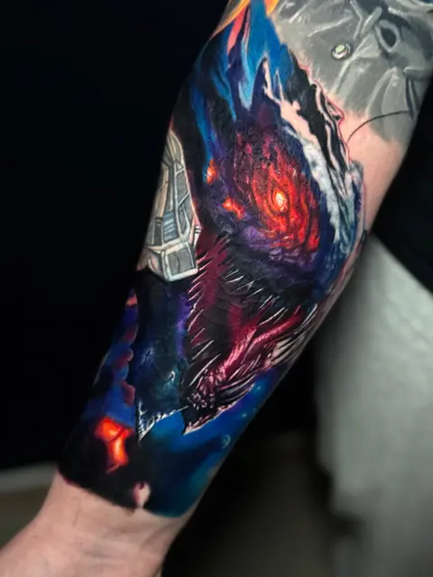
Цена зависит от размера, места и сложности. Назовём её после разговора об эскизе: напишите, что хотите набить.
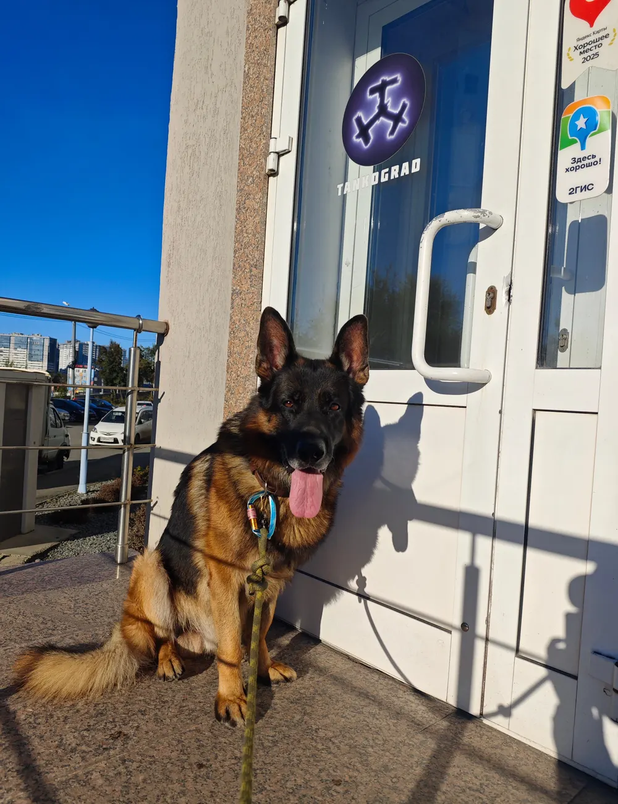
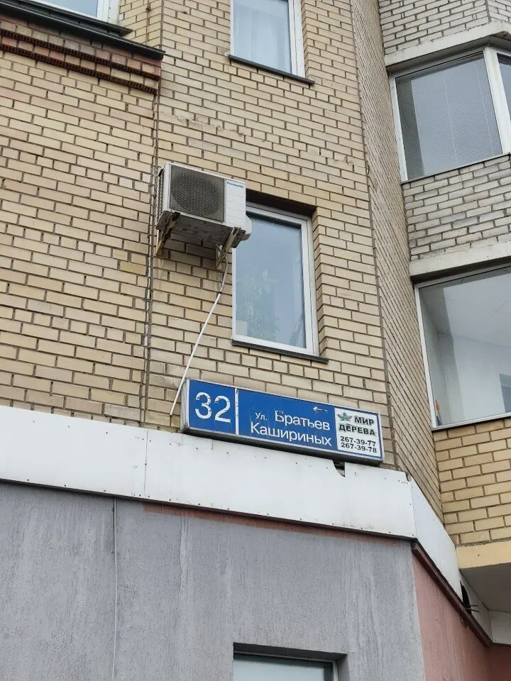
Улица Братьев Кашириных, 32. Рядом с домом есть парковка.
Четыре свежих отзыва 2026 года, скопированы с карточки.
«Очень крутое место.»
«Прекрасная студия с замечательными мастерами, уютная дружеская атмосфера, качество работ на высшем уровне :) Настя замечательный мастер, делал у нее как татуировки, так и пирсинг✨»
«Делал две большие работы у мастера Стаса. Работы выполнены великолепно!»
«Тут я проходила обучение реализму у Стаса. Объяснил доходчиво, показал разные техники.»
Ответим, когда можно прийти, и подскажем мастера. Не любите писать – позвоните.
Пришлите идею или референс: эскиз и цену обсудим до сеанса.